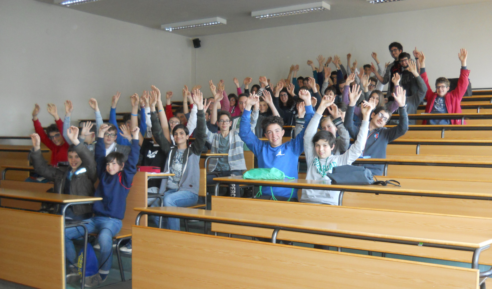
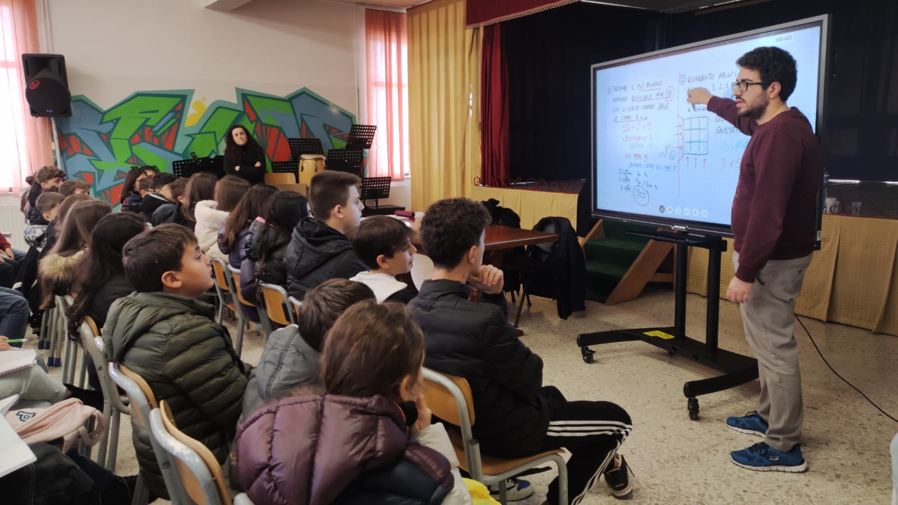
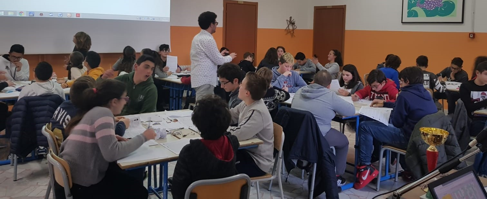
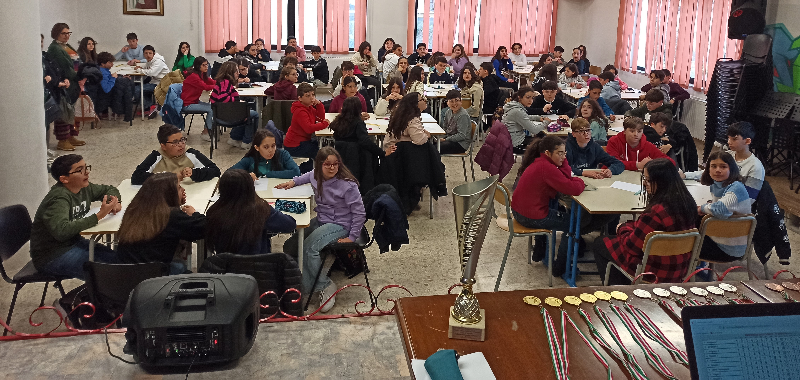

I had the privilege of learning mathematics from excellent teachers and professors, and I am commited to inspire the next generation of pupils and students through several outreach activities.
Maths circles
Math circles originated in Eastern Europe, but recently this tradition has spread and evolved all over. They can be thought as a social club for maths loving kids, where they can cultivate their ability to articulate ideas and construct rigorous proofs. A typical class offers students the possibility to work on non-curricular topics in mathematics under the supervision of professional mathematicians, and problems are designed to help them to be inventive, creative, open-minded and to think outside the box.
|  |  |
I am currently an instructor at the Mathezirkel
of the University of Passau.
Previsouly, I have run maths circles in London at We Solve problems
and The London School of Maths and Programming, and
in Padova at the University and Associazione Geopiano.
Team maths competition
Since 2016, I am organising the annual team maths competition "Matematica sotto l'albero", aimed at the pupils enrolled in the middle schools of the area I grew up in.
|  |  |
The competition lasts 90 minutes and consists of 20 problems.
The solution of each problem is a 4-digit number and, as soon as the team concludes that the result is correct,
one team member goes to the jury and submit it.
The result is immediately checked and, if it is correct, the team gains a certain number of points; otherwise it gets a penalty
(but can keep working on the problem and submit another answer).
The ranking is updated in real time and shown throughout, except in the last 10 minutes when it gets hidden.
All the relevant information can be found in the dedicated webpage (available in Italian only).